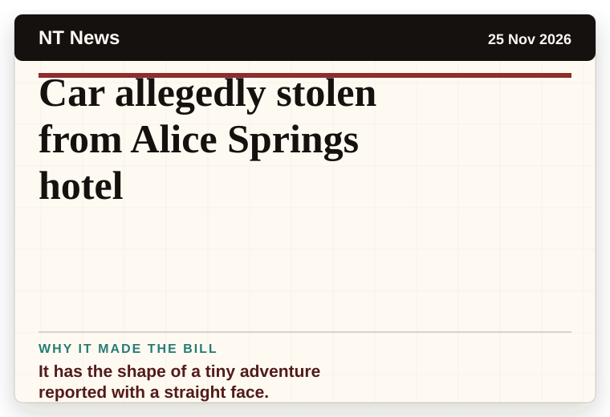
NT News
Australia
Car allegedly stolen from Alice Springs hotel
It has the shape of a tiny adventure reported with a straight face.
The latest daily picks, linked back to the original sources. Search the room, pick a source, or follow a headline out to the full story.
Record updated: 26 Nov 2026, 01:41 PM AEST
Showing 19 headline candidates from the refresh run completed on 26 Nov 2026, 01:41 PM AEST.

It has the shape of a tiny adventure reported with a straight face.
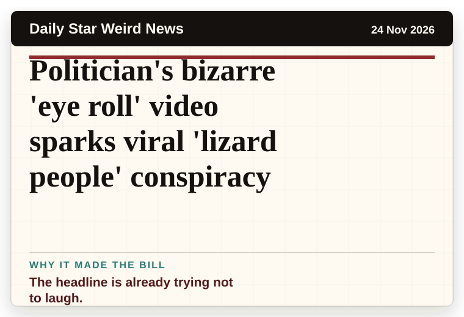
The headline is already trying not to laugh.

A mystery is doing a lot of work in a very small sentence.

The headline is already trying not to laugh.

A very ordinary object has wandered into serious news.

A very ordinary object has wandered into serious news.
A mystery is doing a lot of work in a very small sentence.
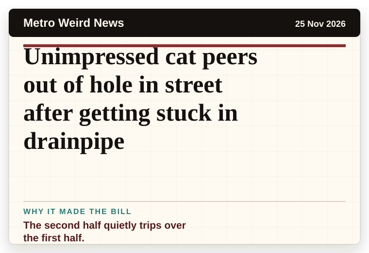
The second half quietly trips over the first half.
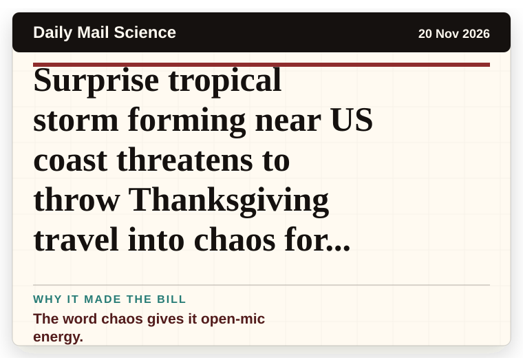
The word chaos gives it open-mic energy.
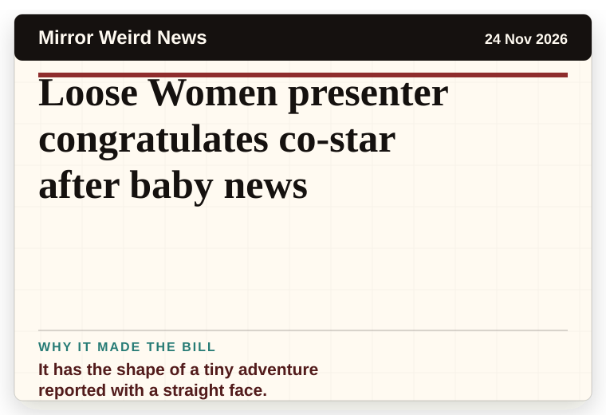
It has the shape of a tiny adventure reported with a straight face.

It has the shape of a tiny adventure reported with a straight face.
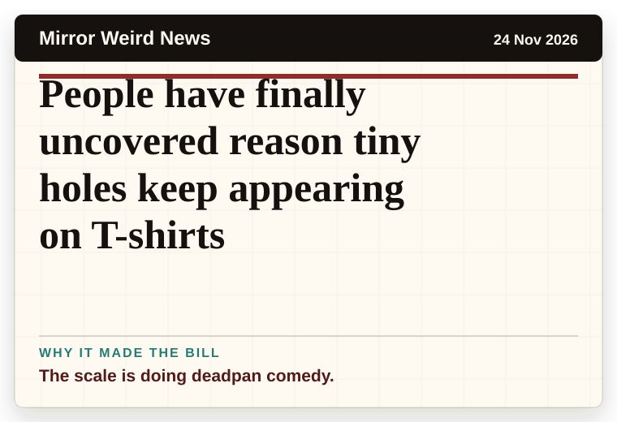
The scale is doing deadpan comedy.

A very ordinary object has wandered into serious news.

The headline is already trying not to laugh.
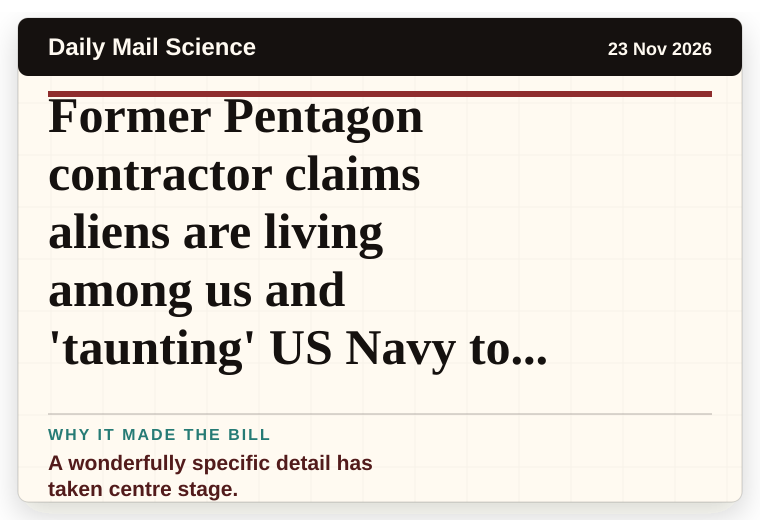
A wonderfully specific detail has taken centre stage.
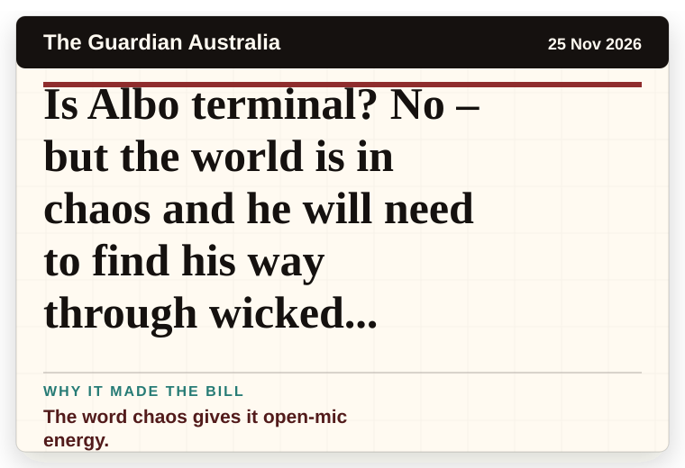
The word chaos gives it open-mic energy.
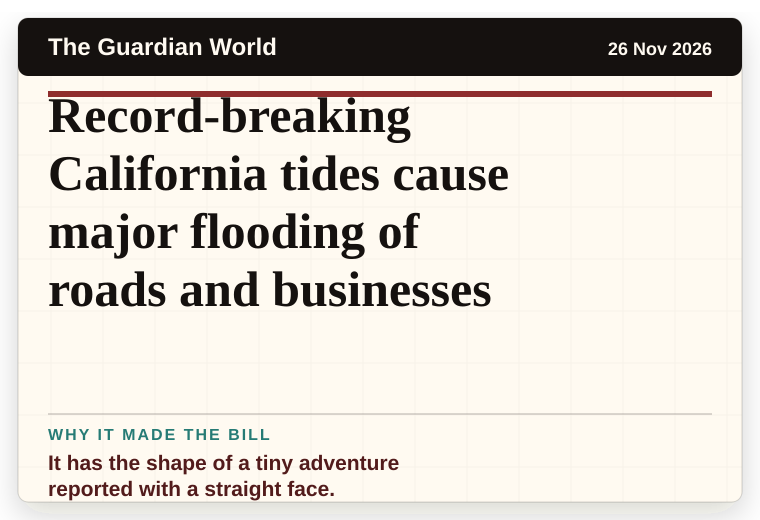
It has the shape of a tiny adventure reported with a straight face.
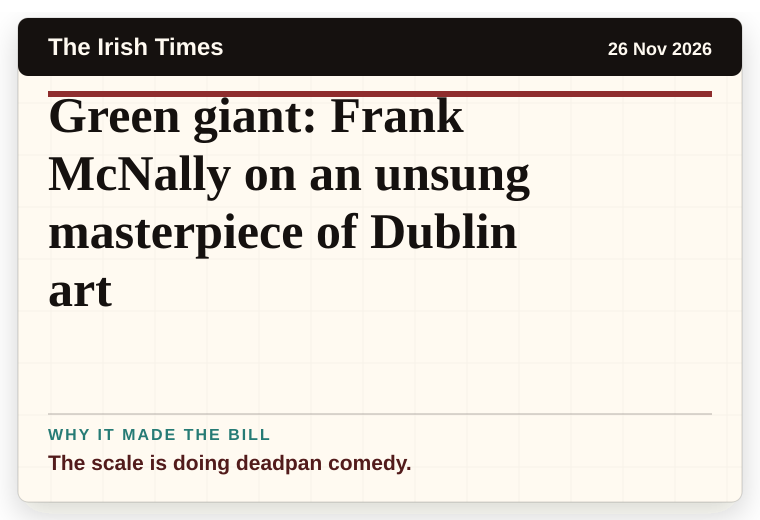
The scale is doing deadpan comedy.
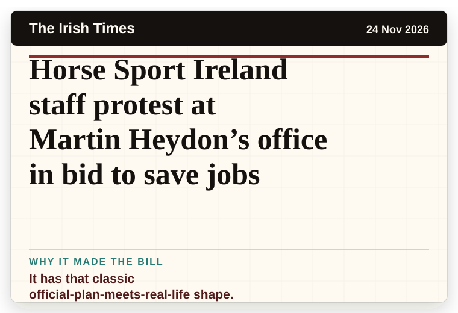
It has that classic official-plan-meets-real-life shape.